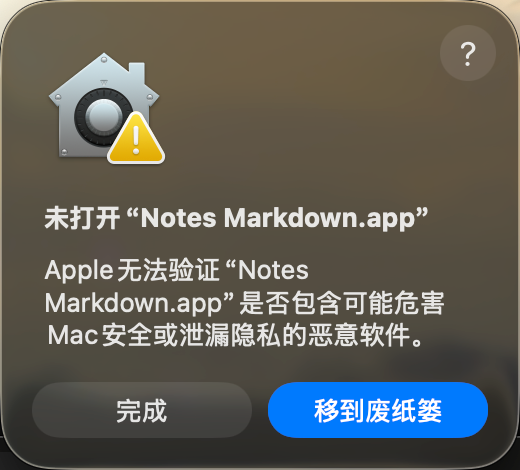

先完成 macOS 的首次打开确认
先把 Notes Markdown.app 拖到「应用程序」，再双击打开。如果看到下面的弹窗，按这页的步骤操作。
这个提示出现在应用启动之前。完成系统确认后，App 才会显示「开始使用与试写」窗口。当前下载的是使用 ad hoc 签名、尚未经过 Apple 公证的预览版。
看到「Apple 无法验证」时怎么打开？

- 确认 App 来自本项目的 GitHub 发布页，且文件完整。选择弹窗里的 完成，保留 App。
- 打开 系统设置 → 隐私与安全性。向下滚动到「安全性」区域。
- 找到提到 Notes Markdown 被阻止打开的提示，点击旁边的 仍要打开。
- 按系统提示认证，并在后续提示里确认 打开。应用启动后会出现使用引导。
找不到「仍要打开」时，再从「应用程序」双击一次 App，选择「完成」，然后返回隐私与安全性页面。组织管理的 Mac 可能需要管理员允许安装。
如果提示包含「将损坏电脑」、已知恶意软件或「已损坏」，请停止打开并核对文件来源及校验值。 Apple 官方打开说明
App 打开后，完成这两步
- 开启辅助功能。 在引导里点击「打开辅助功能设置」，开启 Notes Markdown。列表中没有时，点 + 添加应用程序里的 App。返回引导，等待状态显示「已完成」。
- 完成第一次转换。 确认「自动转换」开启，点击「打开苹果备忘录」，新建测试笔记。在正文空行逐字输入
**你好**，闭合星号后文字会变成粗体。
关闭引导窗口后，从屏幕顶部菜单栏的 Notes Markdown 图标可以暂停、恢复或重新打开「开始使用与试写」。在备忘录按 ⌘Z 撤销转换，段落格式可能需要撤销两次。
Complete the macOS first-launch confirmation
Move Notes Markdown.app to Applications and open it there. This preview uses ad hoc signing and is awaiting Apple notarization. The setup window appears after macOS allows the app to launch.
If Apple says it cannot verify the app
- Confirm the download came from this project's GitHub release and is intact. Choose Done in the alert to keep the app.
- Open System Settings → Privacy & Security and scroll down to Security.
- Find the message about Notes Markdown being blocked and click Open Anyway.
- Authenticate as requested by macOS and confirm Open. The app's setup window will appear.
If the button is missing, try opening the app from Applications again, choose Done, and return to Privacy & Security. A managed Mac may require an administrator. For warnings about known malware or damage, stop opening the file and check its source and checksum. Apple's opening instructions
After the app opens
- Click 打开辅助功能设置 (Open Accessibility Settings) and enable Notes Markdown. Add the app from Applications with + if needed. Return to setup and wait for 已完成 (Completed).
- Enable 自动转换 (Automatic conversion), click 打开苹果备忘录 (Open Apple Notes), and create a test note. Type
**hello**character by character on a blank line in the note body. The word becomes bold.
The menu bar icon lets you pause, resume, or reopen setup. Press ⌘Z in Notes to undo a conversion. Paragraph conversions may need two undo steps.